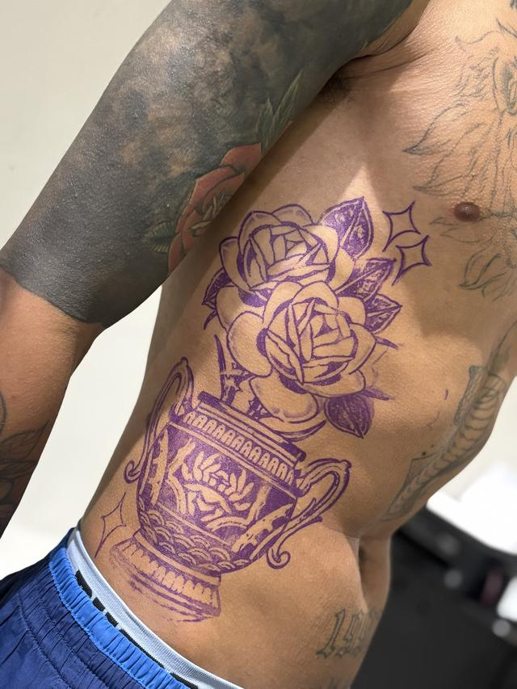

Região do corpo
Tatuagem nas costas
Costas é a maior tela do corpo e a única que você não vê sem espelho. É onde cabe projeto grande de verdade — e onde planejar vale mais do que ter pressa.
01 — A área
Quatro regiões, quatro comportamentos
Omoplata e parte alta
Superfície ampla e relativamente plana, boa para figura central e para rosto em realismo. É a área onde o desenho menos deforma com o movimento.
Coluna
Linha natural de simetria: ótima para composição vertical, e sensível por causa do osso logo abaixo da pele. Sessão longa ali pede pausa.
Lombar
Pele que estica e dobra muito. Desenho com muita linha reta tende a entortar na posição em pé; é melhor seguir a curva do corpo.
Costela
A região mais sensível das que fazem fronteira com as costas, e também a que mais sofre atrito com roupa durante a cicatrização.
Peças
Projeto grande, desenhado antes
Da aplicação do stencil ao resultado: a posição é decidida com a peça já na pele.


O acervo completo fica no portfólio, e os trabalhos mais recentes saem primeiro no Instagram @andretatuadoor.
02 — O caminho
Por que costas se faz em blocos
Uma peça que cobre as costas não cabe em uma sessão — e forçar isso é o jeito mais rápido de estragar o resultado. Pele cansada aceita tinta de outra forma, e o fim da sessão fica diferente do começo.
O que eu faço é fechar a composição inteira no papel antes de começar, e aplicar por blocos: cada sessão termina com uma parte que já faz sentido sozinha. Entre as sessões, a área precisa estar cicatrizada antes de eu voltar nela — isso define o intervalo, não a agenda.
- Composição inteira primeiroO desenho completo é aprovado antes da primeira sessão, com a divisão em blocos já definida.
- Bloco por sessãoUm trabalho grande por dia, com hora marcada. Sessão longa tem pausa, é só pedir.
- Cicatrização entre blocosÁrea cicatrizada antes de voltar. Os cuidados valem mais aqui do que em qualquer outra região, por causa do atrito com roupa e com a cadeira.
Dúvidas
O que mais me perguntam
Quanto tempo leva uma peça grande nas costas?
Depende do tamanho, do nível de detalhe e do intervalo de cicatrização entre as sessões. Eu não prometo prazo antes de fechar a composição: quando o desenho está definido, a divisão em blocos fica clara e aí sim eu digo quantas sessões o projeto pede.
Dói mais nas costas?
Muda por região, não pelas costas em si. Perto da coluna e na costela se sente mais, por causa do osso; na omoplata e na parte alta, menos. Sessão longa tem pausa, e você pode trazer um acompanhante.
Como durmo depois da sessão?
De lado ou de bruços, dependendo de onde ficou a peça, com roupa limpa e folgada sobre a região. Lençol limpo nos primeiros dias faz diferença: costas é a área que mais fica em contato com tecido enquanto cicatriza.
Dá para continuar um projeto que outro tatuador começou?
Depende do que já está na pele. Mande foto da área inteira com boa luz e eu digo o que é possível fazer: continuar, incorporar ou cobrir. Não prometo nada antes de ver.
Me conta a sua ideia
Manda a referência, a região do corpo e o tamanho que você imagina. Eu avalio o projeto e respondo pessoalmente.
Av. Melchert, 606 — Vila Matilde, São Paulo. Todos os dias, das 9h às 22h, somente com hora marcada. Atendimento para maiores de 18 anos.